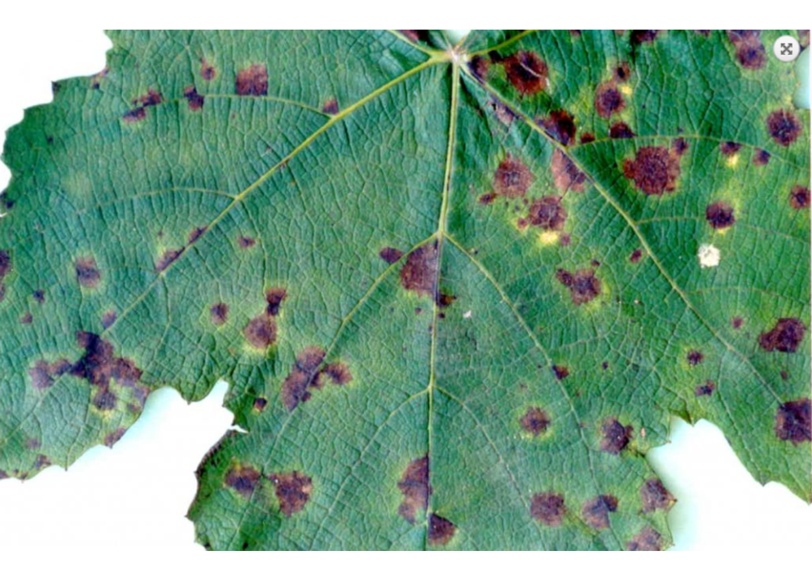
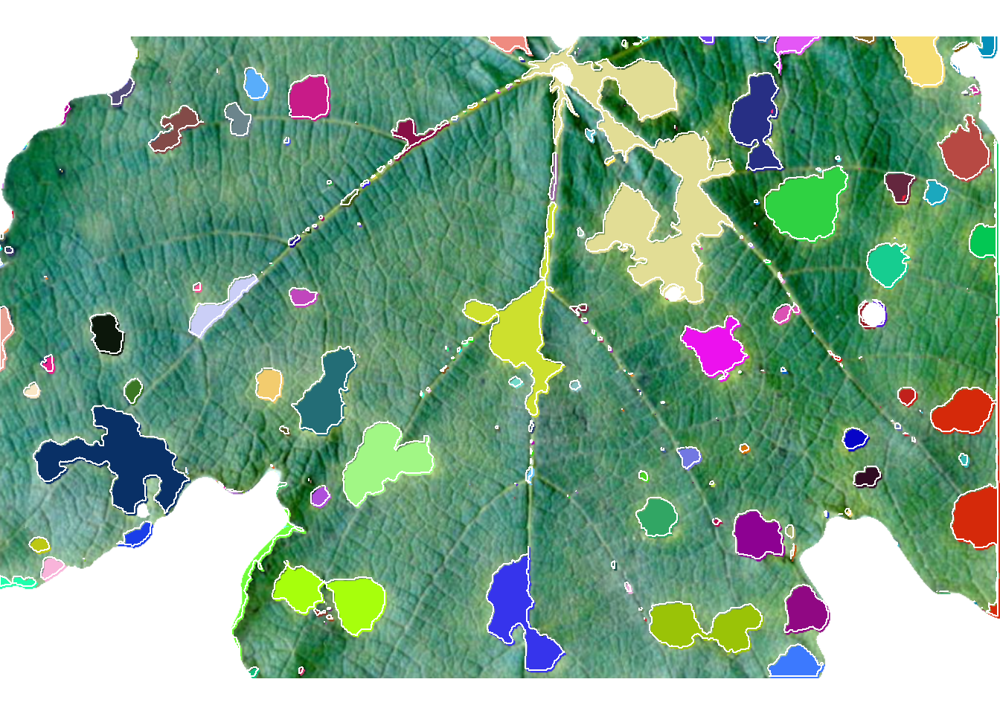
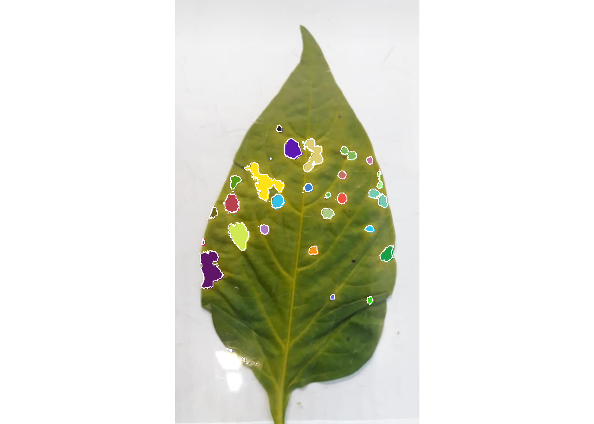
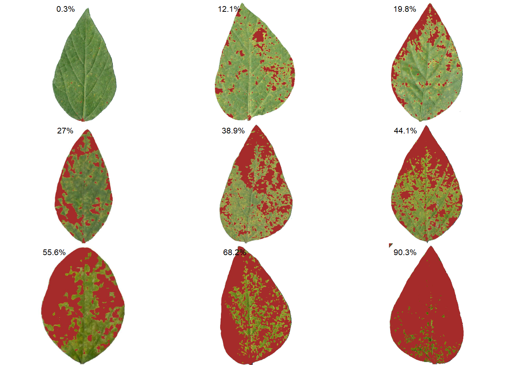
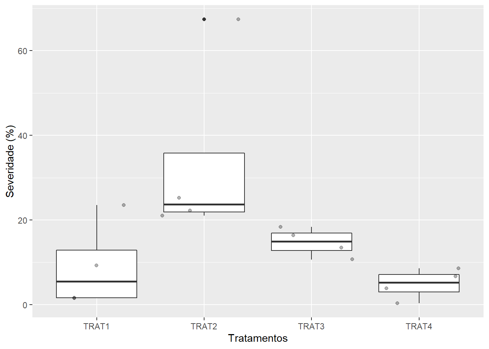
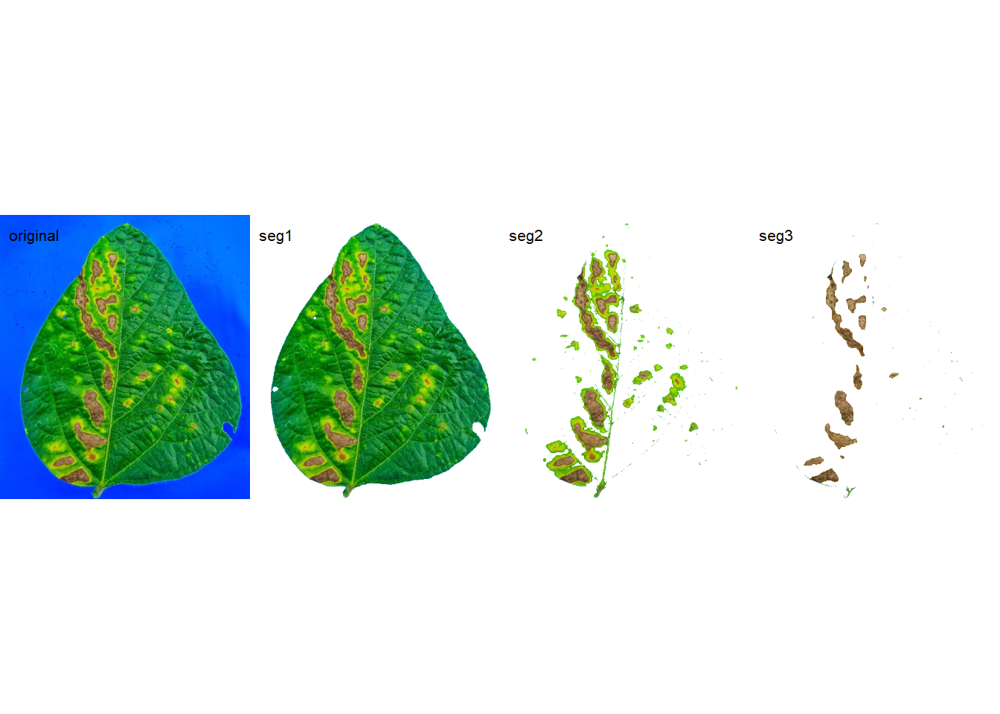

setwd("E:/Desktop/UFSC/cursos/pliman_tut/imgs")Phytopathometry
1 Directory
2 Disease severity
3 Using image indexes
|==========================================================|| Tools for Plant Image Analysis (pliman 1.2.0) || Author: Tiago Olivoto || Type 'citation('pliman')' to know how to cite pliman || Type 'vignette('pliman_start')' for a short tutorial || Visit 'http://bit.ly/pkg_pliman' for a complete tutorial ||==========================================================|img <- image_import("disease.jpeg", plot = TRUE)
res <- measure_disease(img,
index_lb = "B",
index_dh = "HUE2",
invert = c(FALSE, TRUE))
res$severity healthy symptomatic
1 86.94463 13.055374 Using sample palettes
Sample palettes can be made by simply manually sampling small areas of representative images and producing a composite image that will represent each of the desired classes (background, healthy, and symptomatic tissues).
img <- image_import("exemp_1.jpeg", plot = TRUE)
h <- image_import("exem_h.png")
d <- image_import("exem_d.png")
b <- image_import("exem_b.png")
image_combine(img, h, d, b, ncol = 4)
4.1 Producing sample palettes
Users can produce these palettes with pick_palette() function.
h2 <- pick_palette(img)
d2 <- pick_palette(img)
b2 <- pick_palette(img)
image_combine(h2, d2, b2, ncol = 3)4.1.1 Defaults settings
sev <-
measure_disease(img = img,
img_healthy = h,
img_symptoms = d,
img_background = b)
sev$severity healthy symptomatic
1 92.71941 7.2805954.1.2 Filling lesions
sev <-
measure_disease(img = img,
img_healthy = h,
img_symptoms = d,
img_background = b,
show_contour = FALSE)
4.1.3 Showing a mask
sev <-
measure_disease(img = img,
img_healthy = h,
img_symptoms = d,
img_background = b,
show_original = FALSE,
col_lesions = "brown") # padrão é "black"
4.1.4 Segmenting and analyzing lesions
When using show_features = TRUE, the function analyzes the lesions and returns results such as number of lesions, area, perimeter, etc. With show_segmentation = TRUE, segmented lesions are shown.
sev <-
measure_disease(img = img,
img_healthy = h,
img_symptoms = d,
img_background = b,
show_features = TRUE,
show_segmentation = TRUE)
# correct the measures (dpi = 150)
sev_corrected <- get_measures(sev, dpi = 150)5 Batch processing
To analyze several images from a directory, use the pattern argument to declare a pattern of filenames. Here, we Will used 50 soybean leaves available in the repository https://osf.io/4hbr6, a database of images of annotation of severity of plant diseases. Thanks to Emerson M. Del Ponte and his contributors for keeping this project publicly available. Using the save_image = TRUE argument we save the processed images in a temporary directory, defined by tempdir().
# criar um diretório temporário
temp_dir <- tempdir()
system.time(
sev_lote <-
measure_disease(pattern = "soy",
img_healthy = "soja_h",
img_symptoms = "soja_s",
img_background = "soja_b",
show_image = FALSE,
save_image = TRUE,
dir_processed = temp_dir,
show_contour = FALSE,
col_lesions = "brown")
)Processing image soy_1 |= | 2% 00:00:00 Processing image soy_10 |== | 4% 00:00:02 Processing image soy_11 |== | 6% 00:00:04 Processing image soy_12 |=== | 8% 00:00:05 Processing image soy_13 |==== | 10% 00:00:07 Processing image soy_14 |===== | 12% 00:00:08 Processing image soy_15 |====== | 14% 00:00:10 Processing image soy_16 |====== | 16% 00:00:10 Processing image soy_17 |======= | 18% 00:00:12 Processing image soy_18 |======== | 20% 00:00:13 Processing image soy_19 |========= | 22% 00:00:15 Processing image soy_2 |========== | 24% 00:00:17 Processing image soy_20 |========== | 26% 00:00:17 Processing image soy_21 |=========== | 28% 00:00:19 Processing image soy_22 |============ | 30% 00:00:21 Processing image soy_23 |============= | 32% 00:00:22 Processing image soy_24 |============== | 34% 00:00:22 Processing image soy_25 |============== | 36% 00:00:24 Processing image soy_26 |=============== | 38% 00:00:26 Processing image soy_27 |================ | 40% 00:00:28 Processing image soy_28 |================= | 42% 00:00:29 Processing image soy_29 |================== | 44% 00:00:31 Processing image soy_3 |=================== | 46% 00:00:32 Processing image soy_30 |=================== | 48% 00:00:34 Processing image soy_31 |==================== | 50% 00:00:34 Processing image soy_32 |===================== | 52% 00:00:35 Processing image soy_33 |====================== | 54% 00:00:36 Processing image soy_34 |====================== | 56% 00:00:38 Processing image soy_35 |======================= | 58% 00:00:40 Processing image soy_36 |======================== | 60% 00:00:41 Processing image soy_37 |========================= | 62% 00:00:43 Processing image soy_38 |========================== | 64% 00:00:44 Processing image soy_39 |========================== | 66% 00:00:45 Processing image soy_4 |============================ | 68% 00:00:46 Processing image soy_40 |============================ | 70% 00:00:47 Processing image soy_41 |============================= | 72% 00:00:48 Processing image soy_42 |============================== | 74% 00:00:50 Processing image soy_43 |============================== | 76% 00:00:52 Processing image soy_44 |=============================== | 78% 00:00:53 Processing image soy_45 |================================ | 80% 00:00:55 Processing image soy_46 |================================= | 82% 00:00:56 Processing image soy_47 |================================== | 84% 00:00:58 Processing image soy_48 |================================== | 86% 00:00:59 Processing image soy_49 |=================================== | 88% 00:01:00 Processing image soy_5 |===================================== | 90% 00:01:01 Processing image soy_50 |===================================== | 92% 00:01:02 Processing image soy_6 |======================================= | 94% 00:01:04 Processing image soy_7 |======================================= | 96% 00:01:05 Processing image soy_8 |======================================== | 98% 00:01:05 Processing image soy_9 |=========================================| 100% 00:01:06 usuário sistema decorrido
61.23 7.03 68.50 sev_lote$severity img healthy symptomatic
1 soy_1 92.54979 7.4502120
2 soy_10 52.42661 47.5733920
3 soy_11 88.97561 11.0243935
4 soy_12 62.09516 37.9048355
5 soy_13 50.70039 49.2996072
6 soy_14 99.77114 0.2288569
7 soy_15 71.79901 28.2009870
8 soy_16 27.99610 72.0038980
9 soy_17 22.07859 77.9214104
10 soy_18 83.04478 16.9552218
11 soy_19 38.46741 61.5325856
12 soy_2 85.39094 14.6090631
13 soy_20 34.86163 65.1383696
14 soy_21 33.28426 66.7157361
15 soy_22 75.02173 24.9782667
16 soy_23 59.84829 40.1517066
17 soy_24 71.30972 28.6902811
18 soy_25 10.55560 89.4443984
19 soy_26 26.72445 73.2755536
20 soy_27 31.19710 68.8029001
21 soy_28 52.12310 47.8769002
22 soy_29 24.48866 75.5113439
23 soy_3 16.34296 83.6570423
24 soy_30 43.07619 56.9238051
25 soy_31 14.63903 85.3609689
26 soy_32 45.98730 54.0127019
27 soy_33 89.41139 10.5886059
28 soy_34 44.59374 55.4062587
29 soy_35 60.65275 39.3472504
30 soy_36 94.14728 5.8527215
31 soy_37 35.38619 64.6138066
32 soy_38 51.85648 48.1435179
33 soy_39 41.84025 58.1597533
34 soy_4 65.65609 34.3439125
35 soy_40 66.93071 33.0692895
36 soy_41 97.29034 2.7096598
37 soy_42 85.41356 14.5864410
38 soy_43 90.70652 9.2934828
39 soy_44 57.52541 42.4745938
40 soy_45 82.82098 17.1790195
41 soy_46 83.66599 16.3340092
42 soy_47 77.14769 22.8523125
43 soy_48 76.26701 23.7329864
44 soy_49 70.21470 29.7853029
45 soy_5 82.50701 17.4929927
46 soy_50 52.68894 47.3110608
47 soy_6 65.11704 34.8829602
48 soy_7 60.07675 39.9232513
49 soy_8 44.78891 55.2110932
50 soy_9 76.92256 23.07744196 Standard area diagrams
Standard area diagrams (SAD) have long been used as a tool to aid the estimation of plant disease severity, serving as a standard reference template before or during the assessments.
Given an object computed with measure_disease() a Standard Area Diagram (SAD) with n images containing the respective severity values are obtained with sad().
Leaves with the smallest and highest severity will always be in the SAD. If n = 1, the leaf with the smallest severity will be returned. The others are sampled sequentially to achieve the n images after severity has been ordered in ascending order. For example, if there are 30 leaves and n is set to 3, the leaves sampled will be the 1st, 15th, and 30th with the smallest severity values.
The SAD can be only computed if an image pattern name is used in argument pattern of measure_disease(). If the images are saved, the n images will be retrevied from dir_processed directory. Otherwise, the severity will be computed again to generate the images. A SAD with 8 images from the above example can be obtained easely with:
sad(sev_lote, n = 6, ncol = 3)
img healthy symptomatic rank
6 soy_14 99.77114 0.2288569 1
41 soy_46 83.66599 16.3340092 10
44 soy_49 70.21470 29.7853029 20
2 soy_10 52.42661 47.5733920 30
31 soy_37 35.38619 64.6138066 40
18 soy_25 10.55560 89.4443984 507 Parallel processing
To speed up processing time when multiple images are available, you can use the paralell argument. In parallel programming (parallel = TRUE), the images are processed asynchronously (in parallel) in separate R sessions running in the background on the same machine. The number of sections is set by default to 50% of available cores. This number can be controlled explicitly with the argument workers.
system.time(
sev_lote <-
measure_disease(pattern = "soy",
img_healthy = "soja_h",
img_symptoms = "soja_s",
img_background = "soja_b",
show_image = FALSE,
parallel = TRUE)
)Image processing using multiple sessions (6). Please wait. usuário sistema decorrido
0.69 0.23 23.77 8 Multiple images of the same sample
If users need to analyze multiple images from the same sample, the images from the same sample must share the same filename prefix, which is defined as the part of the filename that precedes the first hyphen (-) or underscore (_).
In the following example, 16 images will be used as examples. Here, they represent four replicates of four different treatments (TRAT1_1, TRAT1_2, ..., TRAT4_4). Note that to ensure that all images are processed, all images must share a common pattern, in this case ("TRAT").
system.time(
sev_trats <-
measure_disease(pattern = "TRAT",
img_healthy = "feijao_h",
img_symptoms = "feijao_s",
img_background = "feijao_b",
show_features = TRUE,
show_image = FALSE,
parallel = TRUE)
)Image processing using multiple sessions (6). Please wait. usuário sistema decorrido
0.48 0.11 16.47 sev <-
sev_trats$severity |>
separate_col(img, into = c("TRAT", "REP"))
library(ggplot2)
ggplot(sev, aes(TRAT, symptomatic))+
geom_boxplot() +
geom_jitter(alpha = 0.3) +
labs(x = "Tratamentos",
y = "Severidade (%)")
9 Multiple leaves in one image
When multiple leaves are present in an image, the measure_disease function returns the average severity of the leaves present in the image. To quantify the severity per leaf, the measure_disease_byl() function can be used.
This function computes the percentage of symptomatic leaf area using color palettes or RGB indices for each leaf (byl) of an image. This allows, for example, to process replicates of the same treatment and obtain the results of each replication with a single image. To do this, the sample sheets are first split using the object_split() function and then the measure_disease() function is applied to the sheet list.
byl <-
measure_disease_byl(pattern = "multiplas",
index = "B", # used to segment leaves from background
img_healthy = "soja_h",
img_symptoms = "soja_s",
show_contour = FALSE,
show_features = TRUE,
col_lesions = "red",
parallel = TRUE)Image processing using multiple sessions (6). Please wait.results_byl <- get_measures(byl)
results_byl$results |>
head() img leaf id x y area area_ch perimeter radius_mean
1 multiplas_01 1 1 231.294 26.956 68 70 37.042 4.359
2 multiplas_01 1 2 374.071 31.321 84 81 41.870 5.021
3 multiplas_01 1 3 323.333 35.333 9 4 8.000 1.239
4 multiplas_01 1 4 181.600 56.600 5 1 5.828 0.969
5 multiplas_01 1 5 414.167 59.167 6 2 4.828 1.043
6 multiplas_01 1 6 317.167 61.667 12 7 10.243 1.558
radius_min radius_max radius_sd diam_mean diam_min diam_max major_axis
1 2.867 5.934 0.745 8.718 5.733 11.869 9.996
2 2.603 8.159 1.517 10.042 5.205 16.319 14.939
3 0.471 1.886 0.493 2.478 0.943 3.771 4.709
4 0.601 1.641 0.447 1.938 1.202 3.283 4.342
5 0.825 1.217 0.181 2.085 1.649 2.433 3.127
6 0.539 2.508 0.620 3.115 1.077 5.016 5.768
minor_axis length width radius_ratio eccentricity theta solidity convexity
1 9.559 10.564 9.582 2.070 0.861 1.346 0.971 0.731
2 8.168 14.988 7.980 3.135 0.339 0.598 1.037 0.594
3 2.504 3.379 1.946 4.000 0.283 0.232 2.250 1.020
4 1.277 3.156 0.928 2.732 0.084 -1.204 5.000 0.798
5 2.309 2.121 1.414 1.475 0.556 0.785 3.000 1.086
6 2.679 4.966 2.102 4.657 0.236 -1.450 1.714 0.821
elongation circularity circularity_haralick circularity_norm asm con
1 0.093 20.178 5.848 2.120 0.071 1.070
2 0.468 20.870 3.311 2.130 0.032 7.819
3 0.424 7.111 2.514 1.455 0.301 0.389
4 0.706 6.794 2.168 2.703 0.319 0.500
5 0.333 3.886 5.768 0.742 0.066 15.091
6 0.577 8.743 2.513 1.391 0.516 0.259
cor var idm sav sva sen ent dva den f12 f13
1 0.658 2.563 0.645 23.080 494.759 0.953 1.263 1.070 0.441 0.192 0.485
2 0.713 14.622 0.457 23.085 522.589 1.270 1.771 7.819 0.790 0.213 0.587
3 0.157 1.231 0.806 16.722 265.458 0.446 0.563 0.389 0.290 0.019 0.103
4 0.390 1.410 0.750 20.833 417.058 0.439 0.590 0.500 0.301 0.352 0.472
5 0.002 8.562 0.237 29.455 833.003 0.857 1.206 15.091 0.877 0.187 0.469
6 0.180 1.158 0.870 22.185 475.850 0.380 0.458 0.259 0.249 0.044 0.14210 A little gift
f0 <- image_import("fungo.jpg", plot = TRUE)
res <-
analyze_objects(f0,
my_index = "(G+B)^3-R",
watershed = FALSE,
filter = 30,
contour_size = 3,
contour_col = "black")
meas <- get_measures(res, dpi = 254)
plot_measures(meas,
col = "white",
measure = "diam_mean",
size = 2)
Tip
The segmentation can also be performed using sample palettes representing the foreground and background. In this example, pick the color samples, then use them in the analyze_objects(). ::: {.cell}
back <- pick_palette(f0)
fore <- pick_palette(f0)
res <-
analyze_objects(f0,
background = back,
foreground = fore,
watershed = FALSE,
filter = 30)
meas <- get_measures(res, dpi = 254)
plot_measures(meas,
col = "black",
measure = "diam_mean",
size = 2):::